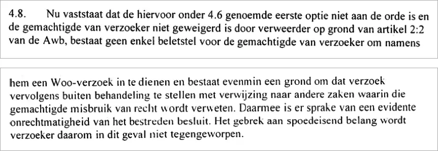
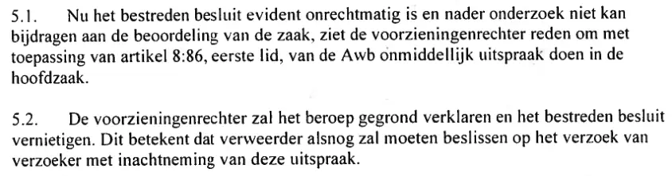

Prueba · Resolución judicial
Tribunal de Distrito de La Haya, resolución del 18 de julio de 2023 (ECLI:NL:RBDHA:2023:17841)
La sección de voces cita dos frases: la primera figura en el fundamento 4.8 de la resolución, la segunda en el resumen de rechtspraak.nl. Ambas se reproducen a continuación, con la conclusión del juez entre ellas.
Fundamento 4.8 · La decisión es manifiestamente ilícita
«4.8. Puesto que consta que la primera opción mencionada en el fundamento 4.6 no es aplicable y que la parte demandada no ha rechazado al representante del solicitante con arreglo al artículo 2:2 de la Awb, no existe impedimento alguno para que el representante del solicitante presente en nombre de este una solicitud Woo, ni existe tampoco motivo para no admitir después a trámite esa solicitud remitiéndose a otros asuntos en los que se reprocha a ese representante abuso de derecho. Así pues, la decisión impugnada adolece de una ilicitud manifiesta. Por ello, en este caso la falta de urgencia no se hace valer en contra del solicitante». Fundamento 4.8, el último antes del epígrafe «Conclusie en gevolgen» (conclusión y consecuencias). «Beletstel» es en el original una errata por «beletsel» (impedimento) y se ha dejado tal cual. Traducido del neerlandés; el texto original figura a continuación.
“4.8. Nu vaststaat dat de hiervoor onder 4.6 genoemde eerste optie niet aan de orde is en de gemachtigde van verzoeker niet geweigerd is door verweerder op grond van artikel 2:2 van de Awb, bestaat geen enkel beletstel voor de gemachtigde van verzoeker om namens hem een Woo-verzoek in te dienen en bestaat evenmin een grond om dat verzoek vervolgens buiten behandeling te stellen met verwijzing naar andere zaken waarin die gemachtigde misbruik van recht wordt verweten. Daarmee is er sprake van een evidente onrechtmatigheid van het bestreden besluit. Het gebrek aan spoedeisend belang wordt verzoeker daarom in dit geval niet tegengeworpen.” Texto original

Fundamentos 5.1 y 5.2 · Conclusión y consecuencias
«5.1. Puesto que la decisión impugnada es manifiestamente ilícita y una investigación adicional no puede contribuir a la valoración del asunto, el juez de medidas provisionales considera que hay motivo para resolver de inmediato sobre el asunto principal, en aplicación del artículo 8:86, apartado 1, de la Awb. 5.2. El juez de medidas provisionales estimará el recurso y anulará la decisión impugnada. Esto significa que la parte demandada tendrá que resolver aún sobre la solicitud del solicitante teniendo en cuenta la presente resolución».
Página 6 de la resolución, fundamentos 5.1 y 5.2, bajo el epígrafe «Conclusie en gevolgen» (conclusión y consecuencias). «Verweerder» (la parte demandada) es el Defensor del Pueblo. El fallo de la página 7 enumera las decisiones en cuatro líneas: se estima el recurso, se anula la decisión impugnada, se ordena dictar una nueva decisión sobre la solicitud Woo y se desestima la solicitud de medidas provisionales. La versión publicada en deeplink.
“5.1. Nu het bestreden besluit evident onrechtmatig is en nader onderzoek niet kan bijdragen aan de beoordeling van de zaak, ziet de voorzieningenrechter reden om met toepassing van artikel 8:86, eerste lid, van de Awb onmiddellijk uitspraak doen in de hoofdzaak. 5.2. De voorzieningenrechter zal het beroep gegrond verklaren en het bestreden besluit vernietigen. Dit betekent dat verweerder alsnog zal moeten beslissen op het verzoek van verzoeker met inachtneming van deze uitspraak.” Texto original

Resumen en rechtspraak.nl
«Así pues, la decisión impugnada adolece de una ilicitud manifiesta. La parte demandada tendrá que resolver aún sobre la solicitud Woo». Las dos últimas frases del resumen que rechtspraak.nl coloca encima de la resolución publicada. Ese resumen es de rechtspraak.nl y no forma parte de la propia resolución; la primera frase figura literalmente en el fundamento 4.8, la segunda resume el fundamento 5.2. «Verweerder» (la parte demandada) es el Defensor del Pueblo. Traducido del neerlandés; el texto original figura a continuación.
“Daarmee is er sprake van een evidente onrechtmatigheid van het bestreden besluit. Verweerder zal alsnog op het Woo-verzoek moeten beslissen.” Texto original
Por qué importa este documento
En esta resolución del 18 de julio de 2023, el juez de medidas provisionales consideró que el Defensor del Pueblo de los Países Bajos (Nationale ombudsman) no podía dejar de admitir a trámite la solicitud Woo (Ley neerlandesa de Acceso Público a la Información) presentada por Giltay el 13 de abril de 2023 por el solo hecho de que se hubiera apreciado abuso de derecho por parte del representante de Giltay. Además, el Defensor del Pueblo no reprochaba nada semejante al propio Giltay. Por ello, la decisión impugnada era «manifiestamente ilícita». El juez estimó el recurso y ordenó a la institución que dictara una nueva decisión sobre la solicitud. El ensayo sostiene que el Defensor del Pueblo puso fin a la correspondencia y después bloqueó esta solicitud de documentos públicos. Una segunda resolución, ECLI:NL:RBDHA:2023:20409, impuso más tarde multas coercitivas por la falta de decisión sobre otra solicitud Woo, del 1 de septiembre de 2023.
Procedencia
- Documento
- Resolución del juez de medidas provisionales, que resuelve al mismo tiempo el asunto principal en aplicación del artículo 8:86 de la Ley General de Derecho Administrativo (Awb)
- Órgano jurisdiccional
- Tribunal de Distrito de La Haya, sala de lo contencioso-administrativo, con sede en La Haya
- Fecha
- 18 de julio de 2023, pronunciada en audiencia pública; el 19 de julio de 2023 se envió una copia a las partes
- Audiencia
- 20 de junio de 2023, vista conjuntamente con las solicitudes de los asuntos SGR 23/2898, SGR 23/4651, SGR 23/4664, SGR 23/4666 y SGR 23/4668, cada uno resuelto por separado
- Números de expediente
- SGR 23/4662 y SGR 23/4663
- ECLI
- ECLI:NL:RBDHA:2023:17841
- Partes
- E.F. Giltay, de La Haya, solicitante, asistido por un representante, contra el Defensor del Pueblo de los Países Bajos, parte demandada
- Juez
- D. Biever, juez de medidas provisionales; secretario judicial Y.E. de Loos
- Asunto
- Ley de Acceso Público a la Información (Wet open overheid, Woo); solicitud no admitida a trámite por considerarse que el representante del solicitante había incurrido en abuso de derecho; disposición contra el abuso del artículo 4.6 de la Woo y rechazo de un representante con arreglo al artículo 2:2 de la Awb
- Solicitud
- Solicitud Woo del 13 de abril de 2023 de todos los documentos que mostraran si se habían adoptado acuerdos sobre el contacto con el solicitante, si sus datos personales se habían vinculado en un archivo o una lista a tales acuerdos o a conductas que se le atribuían, si el personal lo había calificado de reclamante difícil, y si todo ello se había compartido interna o externamente
- Decisión impugnada
- Decisión del Defensor del Pueblo de los Países Bajos del 14 de abril de 2023, por la que no se admitieron a trámite, de una sola vez, doce solicitudes Woo por abuso de derecho
- Resultado
- Recurso estimado; decisión impugnada anulada; se ordena dictar una nueva decisión sobre la solicitud Woo; desestimada la solicitud de medidas provisionales
- Referencias
- Fundamentos 4.6 y 4.8 para el razonamiento; 5.1 y 5.2 para la conclusión; fallo en la página 7; la resolución relacionada del 27 de diciembre de 2023, ECLI:NL:RBDHA:2023:20409, número de expediente SGR 23/6997, con multas coercitivas
- Idioma
- Neerlandés
- Publicado en
- Rechtspraak.nl, el 21 de noviembre de 2023
- Conservado por
- Archivo del autor (copia); la versión anonimizada, en el Consejo del Poder Judicial de los Países Bajos, deeplink.
rechtspraak. nl/ uitspraak? id= ECLI: NL: RBDHA: 2023: 17841 - Fuente
- Sin anonimizar, en dedoofpotgeneraal.
nl/ (7 páginas)doc/ uitspraak.pdf - Véase también
- Defensor del Pueblo de los Países Bajos a Giltay, con la carta de Giltay del 13 de marzo de 2018, 10 de abril de 2018
Citado en:
- el ensayo «La prohibición cayó, el libro quedó en pie» en los capítulos (9) «Registrado para siempre» y (11) «Poner fin al silencio sobre Srebrenica» y en la diapositiva «Tribunal de Distrito de La Haya · 2023» de la presentación «La historia en el mapa»
- la sección de voces bajo el epígrafe «Nuevo avance»
- la biografía del autor.
Documento: https://
Modificado por última vez el 13 de septiembre de 2026, consultado el 27 de noviembre de 2026.

Esta página es una ficha de prueba del libro El general del encubrimiento de Edwin Giltay y del sitio web que lo acompaña.